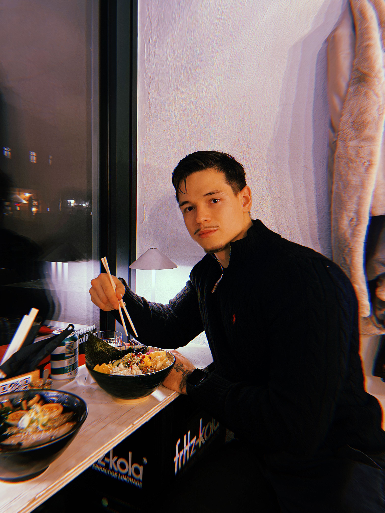

Hello there visitor! I'm Taj Brzovič Ciglar, a passionate self-taught learner on a journey
of becoming a Front End Developer. My path may not have followed a traditional
trajectory, but it's been an enriching one nonetheless.
First let tell you how I ended up here. As I come out of middle school I pursued my studies in computer science during high school,
fueled by a natural curiosity for technology (mostly video games like every other teen out of the middle school). However, after
completing high school my involvment in sports and just the passion of working out and living a healthy life inspired me to pursue a
degree in physiotherapy.
Even though I was focused on physiotherapy, my interest in computers never faded. In fact, it grew stronger during my time as a student.
While managing my studies, I found myself increasingly attracted to the endless possibilities of coding and web development.
In my last year of physiotherapy school, I took the leap into programming on my own, motivated by my curiosity and desire to learn more.
Armed with determination and a strong desire to learn, I began teaching myself. I eagerly used resources like CS50 from Harvard and
The Odin Project to improve my skills in both front-end and back-end development over the past year and a half.
eyond the world of technology, I have a deep appreciation for nature, often finding solace in its beauty and tranquility.
I love spending time outdoors, whether it's hiking through lush forests or simply enjoying a peaceful stroll in the park.
I'm also a proud foodie and wine lover, with a particular passion for Japanese and Asian cuisine. Exploring different flavors, ingredients,
and culinary traditions brings me immense joy and satisfaction.
In addition to my love for nature and food, I have a profound passion for traveling. Exploring new cultures, cuisines, and landscapes fuels
my sense of adventure and curiosity about the world. Whether it's immersing myself in the vibrant culture of Rome or relaxing on a remote beach
in Thailand, I cherish every opportunity to broaden my horizons through travel.
While my professional focus is on web development, my personal interests go beyond just coding. As someone who loves sports,
I thrive in environments that require both physical strength and mental resilience. Whether I'm tackling coding challenges or
navigating team dynamics on the field, I approach each task with dedication and a drive for success.
Welcome to my portfolio
- Taj Brzovič Ciglar
About me
